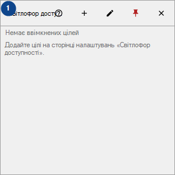
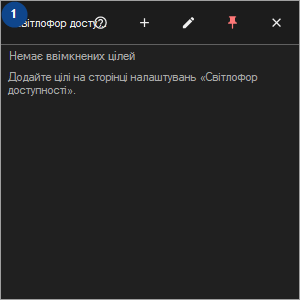

Світлофор доступності
Для чого це вікно
Плитки для ваших вузлів, сайтів, папок і дисків; перевірки йдуть, поки CyrFlip запущено, результати зберігаються лише в пам'яті.


Порядок дій
Прочитайте пояснення до номерів, виберіть потрібні значення та продовжте командою вікна.
Елементи
1. Світлофор доступності
Виберіть або введіть значення для сусіднього підпису. Перевірте його перед продовженням.
Ваші сполучення клавіш